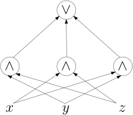

import Section from "~/components/Section";
import Paragraph from "~/components/Paragraph";
import Container from "~/components/Container";
import Carousel from "~/components/Carousel";
import NumberedTitle from "~/components/NumberedTitle";
const Article = () => {
  return (
    <Container>
      <Section
        count={6}
        title_gr="Majority"
        title_en="majority"
        number={1.5}
        counter="DefCtr"
        counter="ExoCtr"
        path="/lecture-notes6.tsx">
        <div id="link-to-toc">
          <a href="../vorlesungsskript">
            Inhaltsverzeichnis
          </a>
          <a href="01-04-monotone-circuits">
            &lt;&lt; Kapitel 1.4
          </a>
        </div>
        <div
          id="link-to-overview"
          style="text-align: end">
          <a href="/">
            zur Kursübersicht
          </a>
          <a href="01-06-lower-and-upper-bounds">
            Kapitel 1.6 &gt;&gt;
          </a>
        </div>
        <div id="rightSideWrapper">
          <div class="content">
            <div class="chapter">
              <div class="subChapter">
                <h1 class="hidden-title">
                  <span class="subChapterTitle">
                    1.5 
                    Majority
                  </span>
                </h1>
                Unser Ziel in diesem Teilkapitel ist es, Schaltkreise für die Majority-Funktion zu bauen:
                <figure>
                  
                </figure>
                Diese nimmt \(n\) Bits als Input und gibt 1 aus, wenn mehr als \(n/2\) davon 1 sind.
                Für \(n=3\) heißt dass, das mindestens zwei Input-Bits 1 sein müssen. Als Formel
                kann man das so schreiben:
                $$
                \maj_3(x,y,z) = (x \wedge y) \vee (x \wedge z) \vee (y \wedge z)
                $$
                und als Schaltkreis so:
                <figure>
                  
                </figure>
                <Paragraph>
                  Wie können wir das sinnvoll verallgemeinern für größere \(n\)?
                  Was geschieht, wenn wir einfach die Wahrheitstabellen-Methode anwenden?
                  Falls \(n\) ungerade ist, dann sieht man leicht, dass die Wahrheitstabelle
                  in genau \(2^&#123;n-1&#125;\) vielen Zeilen eine 1 stehen hat und in ebenso vielen eine 0.
                </Paragraph>
                <div class="well well-lg numbered-exercise container">
                  <span class="numbered-title">
                    Übungsaufgabe
                    <NumberedTitle>
                      &ensp;1.5.1{" "}
                    </NumberedTitle>
                  </span>
                  Sei \(n\) eine ungerade Zahl. Zeigen Sie, dass \(\maj_n\) für genau
                  die Hälfte aller \(2^n\) möglichen Eingaben eine 1 ausgibt (und für die
                  andere Hälfte eine 0).
                </div>
                <Paragraph>
                  Wir erhielten also eine DNF mit \(2^&#123;n-1&#125;\) vielen AND-Gates. Das ist
                  sehr groß, gemessen daran, dass Zählen und mit \(n/2\) vergleichen
                  ja nicht besonders schwierig klingt.
                  Hier ist eine kleine Verbesserung, demonstriert am Beispiel
                  \(n=7\). Wenn wir für \(n=7\) mit Hilfe einer Wahrheitstabelle
                  eine DNF konstruieren, erhalten wir ja unter Anderem den Term
                  $$
                  T := x_1 \bar&#123;x&#125;_2 x_3 x_4 \bar&#123;x&#125;_5 x_6 x_7 \ ,
                  $$
                  da der Input \(\maj_7(1011011) = 1\) ist. Schauen wir uns nun den Term
                  \(T'\) an, den wir erhalten, wenn wir alle negativen Literale aus \(T\) löschen:
                  $$
                  T' := x_1 x_3 x_4 x_6 x_7 \ .
                  $$
                  Wenn dieser Term 1 wird, dann sind \(x_1 = x_3 = x_4 = x_6 = x_7\) sein, also
                  insgesamt fünf Input-Bits 1, und \(\maj_7\) gibt 1 aus. Hier ist also eine Vereinfachung:
                  wir folgen der Wahrheitstabellen-Methode, lassen aber alle negativen Literale weg.
                  Das Ergebnis ist etwas kleiner und immer noch korrekt.
                  Schauen Sie sich nun den Term
                  $$
                  x_1 \bar&#123;x&#125;_2 \bar&#123;x&#125;_3 x_4 \bar&#123;x&#125;_5 x_6 x_7
                  $$
                  an. Auch dieser kommt in der Wahrheitstabelle vor, da \(\maj_7(1001011)=1\) gilt.
                  In unserer neuen Konstruktion wird dieser zu \(x_1 x_4 x_6 x_7\) vereinfacht.
                  Nun schauen Sie: wenn \(T'\) den Wert 1 ausgibt, dann
                  gibt \(x_1 x_4 x_6 x_7\) auf jeden Fall 1 aus, und \(\maj_7\) wird 1; \(T'\) ist
                  also redundant. Irgendwie ist das ja auch klar: zu verlangen, dass die fünf
                  Variablen \(x_1, x_3, x_4 x_6, x_7\) alle mit 1 abstimmen, ist zwar hinreichend,
                  aber eben schon mehr als nötig. Es reicht also, sich auf alle Terme mit genau 4 Variablen zu
                  beschränken.
                  Im allgemeinen sei \(k = \ceil&#123;\frac&#123;k+1&#125;&#123;2&#125;&#125;\). Dann gilt
                </Paragraph>
                $$\begin&#123;align*&#125;
                \maj_n (x_1,\dots,x_n) = \bigvee_&#123;\substack&#123;I \subseteq [n] \\ |I| = k&#125;&#125; \bigwedge_&#123;i \in I&#125; x_i
                \ .
                \label&#123;johns-equation&#125;
                \end&#123;align*&#125;$$
                <Paragraph>
                  Diese Konstruktion hat nun \(&#123;n \choose k&#125;\) Terme, von denen jeder aus \(k\) Variablen
                  besteht.
                  Ist das nun gut oder schlecht?
                </Paragraph>
                <div class="well container theorem">
                  <span
                    class="numbered-title"
                    data-counter="theorem"
                    data-label="mid-level-lower-bound">
                    Lemma.
                  </span>
                  Es gilt
                  $$
                  &#123;n \choose &#123;\ceil&#123;n/2&#125;&#125;&#125; \geq \frac&#123;2^n&#125;&#123;n+1&#125; \ .
                  $$
                </div>
                <div class="well container">
                  {" "}{" "}
                  <b>
                    Beweis.
                  </b>
                  Sei \(k \in \&#123;1,\dots,n\&#125;\). Vergleichen wir \(&#123;n \choose k&#125;\) mit \(&#123;n \choose k-1&#125;\):
                  $$\begin&#123;align*&#125;
                  \frac&#123;&#123;n \choose k&#125;&#125;&#123;&#123;n \choose k-1&#125;&#125;&amp;=
                  \frac&#123; \frac&#123;n!&#125;&#123;k! (n-k)!&#125;&#125;&#123;\frac&#123;n!&#125;&#123; (k-1)! (n-k+1)!&#125;&#125; = \frac&#123;n-k+1&#125;&#123;k&#125;
                  \end&#123;align*&#125;$$
                  und somit
                  $$\begin&#123;align*&#125;
                  &#123;n \choose k&#125;&amp;\geq &#123;n \choose k-1&#125; \quad \Longleftrightarrow \\
                  n-k+1&amp;\geq k \quad \Longleftrightarrow \\
                  2k&amp;\leq n+1 \quad \Longleftrightarrow \\
                  k&amp;\leq \frac&#123;n+1&#125;&#123;2&#125; \quad \Longleftrightarrow \\
                  k&amp;\leq \floor&#123; \frac&#123;n+1&#125;&#123;2&#125;&#125; = \ceil&#123;\frac&#123;n&#125;&#123;2&#125;&#125; \ .
                  \end&#123;align*&#125;$$
                  Aus der letzten Zeile folgt nun, dass \(&#123;n \choose k&#125;\) durch \(k := \ceil&#123;\frac&#123;n&#125;&#123;2&#125;&#125;\)
                  maximiert wird, also
                  \(&#123;n \choose k&#125; \leq &#123;n \choose \ceil&#123;\frac&#123;n&#125;&#123;2&#125;&#125;&#125;\) gilt.
                  <Paragraph>
                    Als nächstes müssen wir uns die Definition von \(&#123;n \choose k&#125;\) ins Gedächtnis rufen.
                    Nein, \(\frac&#123;n!&#125;&#123;k!(n-k)!&#125;\) ist nicht die Definition, sondern eine Formel dafür. Die
                    Definition ist:
                    \(&#123;n \choose k&#125;\) ist die Menge der Teilmengen von \(\&#123;1,\dots,n\&#125;\), die Größe \(k\)
                    haben.
                    Wieviele Teilmenge (jeglicher Größe) gibt es insgesamt? Genau \(2^n\) viele: Sie müssen
                    für
                    jede
                    Zahl \(i \in \&#123;1,\dots,n\&#125;\) die Entscheidung treffen, ob \(i\) in die Menge soll oder
                    nicht,
                    haben also insgesamt \(2^n\) Wahlmöglichkeiten. Daher gilt:
                    $$
                    \sum_&#123;k=0&#125;^n &#123;n \choose k&#125; = 2^n \ .
                    $$
                    Intuitiv gesprochen heißt das: diese Summe hat \(n+1\) Terme (\(k\) wandert von 0 bis
                    \(n\),
                    also muss
                    der größte Term mindestens ein \((n+1)\)-tel des Gesamtbetrages sein. Formal:
                    $$
                    2^n = \sum_&#123;k=0&#125;^n &#123;n \choose k&#125; \leq \sum_&#123;k=0&#125;^n &#123;n \choose \ceil&#123;\frac&#123;n&#125;&#123;2&#125;&#125;&#125;
                    = (n+1) \cdot &#123;n \choose \ceil&#123;\frac&#123;n&#125;&#123;2&#125;&#125;&#125;
                    $$
                    und somit
                    $$
                    &#123;n \choose \ceil&#123;\frac&#123;n&#125;&#123;2&#125;&#125;&#125; \geq \frac&#123;2^n&#125; &#123;n+1&#125; \ ,
                    $$
                  </Paragraph>
                  wie behauptet.
                  <span class="qed">
                    \(\square\)
                  </span>
                </div>
                <Paragraph>
                  Unsere neue, bessere Konstruktion benötigt also immer noch mindestens \(\frac&#123;2^n&#125;&#123;n+1&#125;\)
                  Terme,
                  was bereits für moderate Werte wie \(n=30\) nicht vertretbar ist.
                </Paragraph>
                <h3>
                  Majority Top-Down mit `if-then-else`-Gates
                </h3>
                Wenden wir nun statt Wahrheitstabelle die Top-Down-Methode an, modifiziert
                für monotone Funktionen wie in den
                <a href="../sub-pages/01-monotone.html">
                  &ensp;Lösungen zu den Übungsaufgaben{" "}
                </a>
                &ensp;dargestellt.
                Insbesondere definieren wir Verallgemeinerungen von \(\maj_n\) wie folgt:
                $$\begin&#123;align*&#125;
                \theta^n_k (x_1,\dots,x_n)&amp;:=
                \begin&#123;cases&#125;
                1&amp;\textnormal&#123; falls $x_1 + \dots + x_n \geq k$&#125; \\
                0&amp;\textnormal&#123; sonst.&#125;
                \end&#123;cases&#125;
                \end&#123;align*&#125;$$
                Die Funktion \(\maj_n\) ist also ein Speziallfall \(\theta^n_k\) für
                \(k = \ceil&#123;\frac&#123;n+1&#125;&#123;2&#125;&#125;\). Wir können \(\theta^n_k\) rekursiv zerlegen wie folgt:
                $$
                \theta^n_k (x_1,\dots,x_n) =
                (x_n \wedge \theta^&#123;n-1&#125;_&#123;k-1&#125; (x_1,\dots,x_&#123;n-1&#125;))
                \vee
                \theta^&#123;n-1&#125;_&#123;k&#125; (x_1,\dots,x_&#123;n-1&#125;) \
                $$
                und somit \(\theta^n_k\) aus \(\theta^&#123;n-1&#125;_&#123;k-1&#125;\) und
                \(\theta^&#123;n-1&#125;_k\) berechnen. Rekursiv fortgefühtr sieht das dann so aus:
                <figure>
                  
                </figure>
                Die Konstruktion endet mit \(\theta^m_0\), was immer \(1\) ausgibt, und
                mit \(\theta^m_&#123;m&#125;\), was \(x_1 \wedge \dots \wedge x_m\) ist. Die
                Konstruktion ist leider auch nicht effizient; wenn man
                mit \(C^n_k\) die Anzahl der \(\theta^m_m\) und \(\theta^m_0\) in diesem
                Baum zählt, dann sieht man, dass
                $$\begin&#123;align*&#125;
                C^n_k&amp;= C^&#123;n-1&#125;_&#123;k-1&#125; + C^&#123;n-1&#125;_k \\
                C^n_n&amp;= 1 \\
                C^n_0&amp;= 1
                \end&#123;align*&#125;$$
                gilt; sie erfüllt also die gleiche Rekursionsgleichung wie der Binomialkoeffizient
                \(&#123;n \choose k&#125;\), also gilt \(C^n_k = &#123;n \choose k&#125;\). Die Konstruktion ist
                asymptotisch auch nicht besser als die, aus der Wahrheitstabelle direkt
                eine monotone DNF zu basteln.
                <Paragraph>
                  Allerdings können wir die obige Konstruktion offensichtlich
                  effizienter machen, indem wir mehrfach verwendete Zwischenergebnisse wie
                  \(\theta^&#123;n-1&#125;_&#123;k-1&#125;\) nicht doppelt berechnen, also statt dem obigen
                  Baum einen Schaltkreis nach folgendem Pyramidenschema bauen:
                </Paragraph>
                <figure>
                  
                </figure>
                <Paragraph>
                  Um eine Analogie mit der Programmierpraxis zu bemühen: der Unterschied
                  zwischen den beiden Konstruktionen für \(\theta^n_k\) per Baum versus
                  per Pyramidenschema entspricht dem Unterschied zwischen dem
                  rekursiven Code für \(&#123;n \choose k&#125;\),
                </Paragraph>
                <pre class="listing">
                  {" "}{" "}
                  <code>
                    def binomial(n,k):
                  </code>
                  {" "}{" "}
                  <code>
                    if k == 0 or k == n:
                  </code>
                  {" "}{" "}
                  <code>
                    return 1
                  </code>
                  {" "}
                  &ensp;`else:`{" "}
                  <code>
                    return binomial(n-1,k-1) + binomial(n-1,k)
                  </code>
                  {" "}{" "}
                </pre>
                der exponentielle Laufzeit aufweist, und der effizienten Implementierung mittels
                <i>
                  Dynamic Programming
                </i>
                , bei welchem wir uns die Zwischenergebnisse merken.
                <Paragraph>
                  Um Größe und Tiefe des Schaltkreises zu analysieren, machen wir
                  eine grobe Abschätzung. Für jedes \(\theta^m_l\), das in unserer
                  Pyramide vorkommt, brauchen wir 2 Gates; \(m\) kann die
                  Werte \(0, \dots, n\) annehmen und \(l\) die Werte \(0,\dots,k\),
                  also bekommen wir insgesamt höchstens \((n+1)(k+1)\) graue Kästchen
                  und \(O(n^2)\) Gates.
                  Die Tiefe ist \(O(n)\), da in jedem Schritt von grauem Kasten
                  zu dem nächsttieferen der Wert von \(m\) abnimmt. Insgesamt also haben wir
                  gezeigt:
                </Paragraph>
                <div class="well container theorem">
                  <span class="numbered-title">
                    Theorem
                    <NumberedTitle>
                      &ensp;1.5.1{" "}
                    </NumberedTitle>
                  </span>
                  Die Funktion
                  \(\maj_n (x_1,\dots,x_n)\) kann mit einem Schaltkreis der Größe \(O(n^2)\),
                  Tiefe \(O(n)\) und Fan-in 2 berechnet werden.
                </div>
                <h3>
                  Majority durch Zählen
                </h3>
                \(\maj_n(x_1,\dots,x_n)\) zu bestimmen sollte doch einfach sein: wir zählen die Anzahl der 1en
                und
                vergleichen sie mit \(\ceil&#123;n&#125;&#123;2&#125;\). Wie aber sollen wir zählen? Ganz einfach: mit einem
                Binäraddierer! Sei \(d = \ceil&#123;\log_2(n+1)&#125;\) die Anzahl der Bits in der Binärdarstellung von
                \(n\).
                Wir interpretieren jede Input-Variable \(x_i\) als \(d\)-stellige Binärzahl,
                wobei \(x_i = 1\) der Zahl \(000\dots 001\), also 1 entspricht, und \(x_i = 0\) der Zahl
                \(000\dots 0\), also 0, und addieren die dann auf:
                <figure>
                  
                </figure>
                <div class="well well-lg numbered-exercise container">
                  <span class="numbered-title">
                    Übungsaufgabe
                    <NumberedTitle>
                      &ensp;1.5.2{" "}
                    </NumberedTitle>
                  </span>
                  Bestimmen Sie asymptotisch die Größe und die Tiefe dieses Schaltkreises.
                  Achten Sie besonders bei der Berechnung der Größe darauf, dass die untersten Add-Gadgets
                  ja 1-stellige oder dann 2-stellige Zahlen addieren müssen und erst die weniger obersten Gadgets
                  Zahlen mit \(\Theta(\log n)\) Bits als Input bekommen.
                </div>
                <h3>
                  \(O(\log n)\) Tiefe mit 2-for-3-Addierern.
                </h3>
                Die vorherige Konstruktion mit den Addierern war schon deutlich effizienter
                als unsere pyramidenartige \(\theta^m_l\)-Konstruktion, allerdings wurde
                das Ziel, eine Tiefe von \(O (\log n)\) zu erreichen, wieder verfehlt, wenn auch
                knapp. Die Idee, die eine Tiefe von \(O (\log n)\) erreichen wird, ist ebenso
                einfach wie genial.
                <div class="well container theorem">
                  <span class="numbered-title">
                    Lemma (2-for-3 Adder)
                  </span>
                  Es gibt einen Schaltkreis mit \(O(n)\) Gates,
                  Tiefe 2 und Fan-In 2, der als Input drei
                  \(n\)-stellige Binärzahlen \(x,y,z\) nimmt
                  und zwei \(n+1\)-stellige Binärzahlen \(u, v\) ausgibt, so dass
                  $$
                  x + y + z = u + v
                  $$
                  gilt.
                </div>
                <div class="well container">
                  {" "}{" "}
                  <b>
                    Beweis.
                  </b>
                  Ich demonstriere das Beweisprinzip erst einmal mit drei Zahlen in Basis 10:
                  <figure>
                    
                  </figure>
                  <Paragraph>
                    Wir addieren also pro Stelle drei (einstellige) Zahlen,
                    führen den Übertrag (das Carry) aber nicht der weiter links stehenden Stelle
                    zu, sondern sammeln alle Überträge und bilden daraus die \(n+1\)-stellige
                    Zahl \(u\).
                    Für Binärzahlen ist das natürlich noch einfacher:
                    <figure>
                      
                    </figure>
                  </Paragraph>
                  Dieser Schaltkreis hat insgesamt \(O(n)\) Gates und Tiefe 2 (wobei wir
                  die NOT-Gates im \(\oplus\)-Gate nicht mitzählen).
                  <span class="qed">
                    \(\square\)
                  </span>
                </div>
                Wir interpretieren nun die \(n\) Inputs
                \(x_1,\dots,x_n\) von Majoroty als einstellige Binärzahlen, sortieren sie in
                Dreiergruppen und machen per 2-for-3-Addierer daraus
                \( \ceil&#123;\frac&#123;2n&#125;&#123;3&#125;&#125;\) Zahlen. Dann machen wir (mit den mittlerweile
                2-stelligen Zahlen) weiter und bekommen circa
                \( \ceil&#123;\frac&#123;4n&#125;&#123;9&#125;&#125;\) Zahlen. Auf jeder Ebene schrumpft die Anzahl
                der Zahlen um einen Faktor von \(\frac&#123;2&#125;&#123;3&#125;\); nach
                \(
                \log_&#123;3/2&#125; n
                \)
                Ebenen haben wir schließlich noch zwei mittlerweile (\(\log n\))-stellige Zahlen, die
                wir mit einem "normalen" Binäraddierer addieren. Das Ergebnis vergleichen
                wir mit dem \(\geq\)-Schaltkreis mit \(\frac&#123;k+1&#125;&#123;2&#125;\). Was ist die
                Tiefe des Gesamtschaltkreises? Es ist
                $$\begin&#123;align*&#125;
                &amp;\log_&#123;3/2&#125; n \times \depth(\textnormal&#123;2-for-3 adder&#125;) \\
                +&
                \depth(\textnormal&#123;Binäraddierer für ($\log n$)-stellige Zahlen&#125;) \\
                +&
                \depth(\textnormal&#123;$\geq$-Schaltkreis für ($\log n$)-stellige Zahlen&#125; \\
                =&
                O(\log n) + O(\log \log n) + O(\log \log n) = O(\log n) \ .
                \end&#123;align*&#125;$$
                Die Größe des Schaltkreises wird dominiert von den 2-for-3-Addierern. Wir
                haben \(O(n)\) viele davon, allerdings hat jeder bis zu
                \(O(\log n)\) viele Gates, da wir ja (\(\log n\))-stellige Zahlen addieren müssen;
                wir haben insgesamt also \(O (n \log n)\) viele Gates.
                <div class="well container theorem">
                  <span class="numbered-title">
                    Theorem
                    <NumberedTitle>
                      &ensp;1.5.2{" "}
                    </NumberedTitle>
                    .
                  </span>
                  Die Konstruktion mit 2-for-3-Addierern gibt uns einen Schaltkreis
                  für Majority mit Fan-in 2, Tiefe \(O(\log n)\) und
                  Größe \(O (n \log n)\)
                </div>
                <div class="well well-lg numbered-exercise container">
                  <Paragraph>
                    <span class="numbered-title">
                      Übungsaufgabe
                      <NumberedTitle>
                        &ensp;1.5.3{" "}
                      </NumberedTitle>
                    </span>
                    Führen Sie eine genauere Abschätzung der Größe durch. Untersuchen Sie insbesondere:
                  </Paragraph>
                  <ol>
                    <li>
                      Wieviele 2-for-3-Addierer haben Sie in Ebene \(i\) des Baumes?
                    </li>
                    <li>
                      Wieviel Bits haben die Zahlen auf Ebene \(i\), und wie groß muss daher
                      der 2-for-3-Addierer sein?
                    </li>
                    <li>
                      Was ergibt sich insgesamt in Summe?
                    </li>
                  </ol>
                </div>
                <Paragraph>
                  Wir haben nun also fast alle unserer Ziele erreicht. Allerdings hat
                  die Konstruktion mit 2-for-3-Addierern einen Schönheitsfehler: sie ist nicht
                  monoton. Warum sollten wir das wollen? Nun ja, Majority ist eine
                  monotone Funktion, also ist es ja irgendwie verständlich, dass wir auch einen
                  monotonen Schaltkreis wollen. Unser Pyramidenschema, in dem wir
                  alle \(\theta^m_k\) berechnen, ist monoton, hat allerdings leider
                  Tiefe \(\Omega(n)\).
                </Paragraph>
                <h3>
                  Monoton und polylogarithmische Tiefe durch Halbierung und Aufzählung.
                </h3>
                <Paragraph>
                  Die Idee ist, dass wir, anstatt \(\theta^n_k\) aus
                  \(x_n\), \(\theta^&#123;n-1&#125;_&#123;k-1&#125;\) und \(\theta^&#123;n-1&#125;_&#123;k&#125;\) zu berechnen,
                  versuchen, irgendwie von \(n\) auf \(n/2\) runterzukommen. Dann könnten wir
                  rekursiv weitermachen und müssten uns nur durch logarithmisch viele Werte von \(n\) wühlen.
                  Wir sehen, dass wir \(k\) auf \(k+1\) Weisen als Summe zweier nichtnegativer
                  Zahlen \(a+b = k\) schreiben können. Des weiteren zerlegen wir
                  \(\mathbf&#123;x&#125; \in \&#123;0,1\&#125;^n\) in
                  \(\mathbf&#123;y&#125; = (x_1, \dots, x_&#123;n/2&#125;)\) und
                  \(\mathbf&#123;z&#125; = (x_&#123;n/2+1&#125;, \dots, x_n)\) und sehen, dass
                  $$\begin&#123;align*&#125;
                  \sum_i x_i&amp;\geq k \quad \Longleftrightarrow \\
                  \sum_i y_i&amp;\geq a \wedge \sum_j z_j \geq b
                  \textnormal&#123; für Werte $a,b \geq 0$ mit $a + b = k$&#125;
                  \end&#123;align*&#125;$$
                  und somit
                  $$\begin&#123;align*&#125;
                  \theta^n_k(\mathbf&#123;x&#125;)&amp;= \bigvee_&#123;a=0&#125;^k
                  ( \theta^&#123;n/2&#125;_a (\mathbf&#123;y&#125;) \wedge
                  \theta^&#123;n/2&#125;_&#123;k-a&#125; (\mathbf&#123;z&#125;) )
                  \end&#123;align*&#125;$$
                  Wenn wir diese Konstruktion rekursiv fortsetzen, erhalten
                  wir \(\log n\) Ebenen und somit auf den ersten Blick logarithmische
                  Tiefe. Auf den zweiten Blick erkennen wir, dass wir etwas geschummelt haben:
                  die \(\bigvee\)-Gates haben sehr großen Fan-in, nämlich bis zu \(n\). Um
                  Fan-in 2 zu erreichen, müssen wir jedes \(\bigvee\)-Gate durch einen Binärbaum
                  aus normalen \(\vee\)-Gates von Fan-in 2 ersetzen. Dies gibt uns zusätzlich
                  Tiefe \(O(\log n)\){" "}
                  <i>
                    pro \(\bigvee\)-Gate
                  </i>
                  ; wir erhalten also insgesamt
                  eine Tiefe von \(O(\log^2 n)\).
                </Paragraph>
                <div class="well well-lg numbered-exercise container">
                  <span class="numbered-title">
                    Übungsaufgabe
                    <NumberedTitle>
                      &ensp;1.5.4{" "}
                    </NumberedTitle>
                  </span>
                  dass polynomiell viele (in diesem Falle: \(O(n^2)\) viele) Gates ausreichen.
                  Zeigen Sie, wie die gerade skizzierte Konstruktion so ausgeführt werden kann,
                </div>
                <h3>
                  Monoton und logarithmische Tiefe: Valiants probabilitische Konstruktion
                </h3>
                <div class="well container theorem">
                  <span class="numbered-title">
                    Theorem
                    <NumberedTitle>
                      &ensp;1.5.3{" "}
                    </NumberedTitle>
                    .
                  </span>
                  Es gibt einen monotonen Schaltkreis mit Fan-in 2, Tiefe \(O(\log n)\) und Größe
                  \(\poly(n)\), der \(\maj_n\) berechnet.
                </div>
                <div class="well container">
                  {" "}{" "}
                  <b>
                    Beweis.
                  </b>
                  Die Beweismethode, die wir verwenden, ist womöglich neu für Sie. Wir verwenden
                  bei der Konstruktion des Schaltkreises{" "}
                  <i>
                    Zufall
                  </i>
                  ; am Ende werden
                  wir zeigen, dass dieser zufällige Schaltkreis mit hoher Wahrscheinlichkeit
                  \(\maj_n\) auf allen möglichen \(2^n\) Inputs korrekt berechnen, und folgern
                  daraus, das etwas, was mit hoher Wahrscheinlichkeit eintritt, auch existieren muss.
                  Die Existenz folgt also schlussendlich aus einer Wahrscheinlichkeitsrechnung.
                  Das heißt auch, dass ich Ihnen für konkretes \(n\), sagen wir \(n = 99\),
                  nicht hinschreiben könnte, wie ein korrekter Schaltkreis aussähe; ich könnte
                  die randomisierte Konstruktion durchführen und Ihnen erklären, das der
                  resultierende Schaltkreis höchstwahrscheinlich korrekt ist.
                  <Paragraph>
                    Während des ganzen Beweises müssen Sie sich vor Augen halten, dass wir
                    bei der Konstruktion des Schaltkreises \(C\) Zufall verwenden;
                    wir nehmen nicht an, dass die Inputs \(x \in \&#123;0,1\&#125;^n \) in irgendeiner
                    Weise zufällig sind. Wir verwenden also
                    <i>
                      Wahrscheinlichkeitsverteilungen über Schaltkreisen
                    </i>
                    , nicht
                    von über Inputs. Zuerst definieren wir
                    die{" "}
                    <i>
                      Signalstärke
                    </i>
                    {" "}von Verteilungen über Schaltkreise.
                  </Paragraph>
                  <div class="well subtheorem theorem">
                    <span class="numbered-title">
                      Definition
                      <NumberedTitle>
                        &ensp;1.5.4{" "}
                      </NumberedTitle>
                      &ensp;(Signalstärke)
                    </span>
                    Sei \(\mathcal&#123;C&#125;\) eine Verteilung über Schaltkreise mit Input-Variablen
                    \(x_1,\dots,x_n\). Wir sagen, dass \(\mathcal&#123;C&#125;\){" "}
                    <i>
                      Signalstärke mindestens \(\delta\)
                    </i>
                    hat, wenn
                    $$
                    \forall x \in \&#123;0,1\&#125;: \quad \Pr_&#123;C \in \mathcal&#123;C&#125;&#125; [C(x) = \maj_n(x)]
                    \geq \frac&#123;1 + \delta&#125;&#123;2&#125;
                    $$
                    gilt.
                  </div>
                  <Paragraph>
                    In Worten, wenn der zufällig ausgewählte Schaltkreis \(C\) den Wert
                    \(\maj_n(x)\) besser als ein Münzwurf vorhersagt, und zwar um \(\delta/2\) besser.
                    Wir können einen ganz einfachen (zufälligen Schaltkreis)
                    bauen, der ein schwache aber positive Signalstärke hat.
                  </Paragraph>
                  <div class="well subtheorem theorem">
                    <span class="numbered-title">
                      Lemma.
                    </span>
                    Es gibt eine Wahrscheinlichkeitsverteilung \(\mathcal&#123;C&#125;_0\) über monotone Schaltkreise der
                    Größe 1,
                    die Signalstärke \(\frac&#123;1&#125;&#123;n&#125;\) hat.
                    Genauer gesagt gilt für jeden Input \(x \in \&#123;0,1\&#125;^n\):
                    ein nach dieser Verteilung zufällig ausgewählter Schaltkreis
                    \(C \sim \mathcal&#123;C&#125;_0\) ist mit Wahrscheinlichkeit
                    mindestens \(\frac&#123;1&#125;&#123;2&#125; + \frac&#123;1&#125;&#123;2n&#125;\) korrekt ist.
                    Formal ausgedrückt:
                    $$
                    \forall \x \in \cube^n: \quad
                    \Pr_&#123;C \sim \mathcal&#123;C&#125;_0&#125; [C(\x) = \maj_n(\x)] = \frac&#123;1&#125;&#123;2&#125; + \frac&#123;1&#125;&#123;2n&#125; \ .
                    $$
                  </div>
                  <div class="well subtheorem">
                    {" "}{" "}
                    <b>
                      Beweis.
                    </b>
                    Der Schaltkreis bzw. die Wahrscheinlichkeitsverteilung ist extrem einfach.
                    Wir wählen zufällig einen Index \(I \in \&#123;1,\dots,n\&#125;\) und
                    geben \(x_I\) als unseren Schaltkreis \(C\) (bestehend aus einem einzigen Input-Gate,
                    das gleichzeitig das Output-Gate ist) aus. Dieser Schaltkreis
                    ist natürlich monoton.
                    <Paragraph>
                      Beachten Sie, dass ich den Index groß geschrieben mit \(I\) bezeichne,
                      nicht \(i\); das ist Konvention, weil \(I\) eine Zufallsvariable ist.
                      Sei nun ein festes \(\x \in \&#123;0,1\&#125;\) gegeben. Mit welcher Wahrscheinlichkeit
                      ist unser (recht primitiver) Schaltkreis korrekt?
                    </Paragraph>
                    $$\begin&#123;align*&#125;
                    C(\x)&amp;= \maj_n (\x) \quad \Longleftrightarrow \\
                    x_I&amp;= \maj_n (\x) \ .
                    \end&#123;align*&#125;$$
                    Wir unterscheiden nun zwei Fälle. Wenn \(\maj_n(\x) = 1\) ist, dann
                    gibt es mindestens \(k+1\) Indizes \(i\) mit \(x_i = 1\). Wenn wir
                    mit \(I\) einen solchen ausgewählt haben, dann sind wir erfolgreich. Die
                    Wahrscheinlichkeit hierfür ist
                    $$\begin&#123;align*&#125;
                    \Pr_&#123;C \sim \mathcal&#123;C&#125;_0&#125; [C(\x) = 1] = \Pr_&#123;I \in [n]&#125; [x_I = 1]&amp;= \frac&#123;| \&#123;i \in [n]\
                    |
                    \ x_i = 1\&#125;&#125;&#123;n&#125; \geq \frac&#123;k+1&#125;&#123;n&#125; \\
                    &amp;= \frac&#123;k+1&#125;&#123;2k+1&#125; = \frac&#123;k + \frac&#123;1&#125;&#123;2&#125; + \frac&#123;1&#125;&#123;2&#125;&#125;&#123;2k+1&#125; \\
                    &amp;= \frac&#123;1&#125;&#123;2&#125; + \frac&#123;1&#125;&#123;2n&#125; \ .
                    \end&#123;align*&#125;$$
                    Wenn nun \(\maj_n(\x) = 0\) ist, dann gibt es mindestens \(k+1\) Stellen \(i\) mit
                    \(x_i = 0\), und somit ist \(C(\x)\) auch wieder mit Wahrscheinlichkeit mindestens
                    \(\frac&#123;k+1&#125;&#123;n+1&#125;\) korrekt.
                    <span class="qed">
                      \(\square\)
                    </span>
                  </div>
                  <Paragraph>
                    Um eine Analogie aus dem Alltag zu bemühen: wenn Sie für eine
                    Wahlprognose{" "}
                    <i>
                      einen
                    </i>
                    {" "}zufällig ausgewählten Bürger befragen, so
                    ist das Ergebnis zwar nicht wirklich repräsentativ, aber immerhin leicht
                    besser, als wenn Sie einfach raten würden. Unser zufälliger
                    Schaltkreis sendet uns also ein schwaches aber positives Signal in die
                    richtige Richtung. Die Signalstärke ist \(\frac&#123;1&#125;&#123;n&#125;\).
                  </Paragraph>
                  <Paragraph>
                    Die zweite Zutat ist nun ein "Signalverstäker".
                    Angenommen, eine Verteilung \(\mathcal&#123;C&#125;\) hat Signalstärke \(\delta\), also
                    $$
                    \forall \x \in \&#123;0,1\&#125;^n : \quad
                    \Pr_&#123;C \sim \mathcal&#123;C&#125;&#125; [C(\x) = \maj_n(\x)] \geq \frac&#123;1+\delta&#125;&#123;2&#125; \ .
                    $$
                    Dann können wir{" "}
                    <i>
                      drei
                    </i>
                    {" "}Schaltkreise
                    \(C_1, C_2, C_3 \sim \mathcal&#123;C&#125;\) unabhängig voneinander samplen und
                    einen neuen Schaltkreis bauen: \(C'(\x) := \maj_3 (C_1(\x), C_2(\x), C_3(\x))\). Dies gibt
                    uns wiederum eine Verteilung über Schaltkreise, die wir
                    \(\mathcal&#123;C&#125;^&#123;\otimes 3&#125;\) nennen. Diese hat eine höhere Signalstärke:
                  </Paragraph>
                  <div class="well subtheorem theorem">
                    <span class="numbered-title">
                      Lemma
                    </span>
                    Falls \(\mathcal&#123;C&#125;\) eine Verteilung über Schaltkreise der Tiefe
                    \(d\) und Größe \(s\) ist und \(\mathcal&#123;C&#125;\) Signalstärke \(\delta\) hat, dann gilt:
                    <ol>
                      <li>
                        alle Schaltkreise in \(\mathcal&#123;C&#125;^&#123;\otimes 3&#125;\) haben Tiefe
                        \(d+2\);
                      </li>
                      <li>
                        alle Schaltkreise in \(\mathcal&#123;C&#125;^&#123;\otimes 3&#125;\) haben Größe
                        \(3s+4\);
                      </li>
                      <li>
                        die Signalstärke von \(\mathcal&#123;C&#125;^&#123;\otimes 3&#125;\) ist
                        \(\frac&#123;3&#125;&#123;2&#125; \delta - \frac&#123;1&#125;&#123;2&#125;\delta^3\).
                      </li>
                    </ol>
                  </div>
                  <div class="well container-fluid">
                    <Paragraph>
                      {" "}{" "}
                      <b>
                        Beweis.
                      </b>
                      Wir betrachten ein festes \(\x \in \cube^n\) mit \(\maj_n(\x) = 1\); der
                      Fall \(\maj_n(\x) = 0\) ist analog. Wir definieren
                      nun \(U := C_1(\x)\), \(V := C_2(\x)\) und \(W := C_3(\x)\). Da
                      \(C_1, C_2, C_3 \sim \mathcal&#123;C&#125;\) zufällige Schaltkreise sind, sind \(U, V, W\)
                      Zufallsvariable
                      über \(\cube\), und zwar{" "}
                      <i>
                        unabhängig
                      </i>
                      , weil wir \(C_1, C_2, C-3\) auch unabhängig
                      gesampelt haben. Wir wissen: \(\Pr[U=1] = \Pr[V=1] = \Pr[W=1] \geq \frac&#123;1+\delta&#125;&#123;2&#125; =:
                      p\).
                      Was ist nun \(\Pr[\maj_3(U,V,W) = 1]\)?
                    </Paragraph>
                    $$\begin&#123;align*&#125;
                    \Pr[\maj_3(U,V,W)=1]&amp;= \Pr[U=V=W=1] + \Pr[\textnormal&#123;genau zwei von $\&#123;U,V,W\&#125;$ sind 1&#125;]
                    \\
                    &amp;= p^3 + 3p^2 (1-p) = \pfrac&#123;1 + \delta&#125;&#123;2&#125;^3 + 3 \pfrac&#123;1 + \delta&#125;&#123;2&#125;^2 \frac&#123;1 -
                    \delta&#125;&#123;2&#125; \\
                    &amp;= \frac&#123;1&#125;&#123;8&#125; (4 + 6 \delta - 2 \delta^3) \\
                    &amp;= \frac&#123;1&#125;&#123;2&#125; \left( 1 + \frac&#123;3&#125;&#123;2&#125; \delta - \frac&#123;1&#125;&#123;2&#125;\delta^3 \right) \ .
                    \end&#123;align*&#125;$$
                    <Paragraph>
                      Die Signalstärke von \(\mathcal&#123;C&#125;^&#123;\otimes 3&#125;\) ist also mindestens
                      \(\frac&#123;3&#125;&#123;2&#125; \delta - \frac&#123;1&#125;&#123;2&#125; \delta^3\).
                      <span class="qed">
                        \(\square\)
                      </span>
                    </Paragraph>
                  </div>
                  <Paragraph>
                    Wir beginnen nun mit der Verteilung \(\mathcal&#123;C&#125;_0\) über Schaltkreise der
                    Größe 1 und definieren{" "}
                  </Paragraph>
                  $$\begin&#123;align*&#125;
                  \mathcal&#123;C&#125;_&#123;i+1&#125; := (\mathcal&#123;C&#125;_i)^&#123;\oplus 3&#125; \ .
                  \end&#123;align*&#125;$$
                  <Paragraph>
                    Zur Wiederholung: um \(C \sim \mathcal&#123;C&#125;_&#123;i+1&#125;\) zu sampeln, sampeln wir unabhängig
                    drei Schaltkreise \(\sim \mathcal&#123;C&#125;_i\) und verknüpfen deren Output-Gates mit einem
                    \(\maj_3\)-Gadget. Wenn \(\mathcal&#123;C&#125;_i\) die Signalstärke \(\delta_i\) hat, dann
                    hat \(\mathcal&#123;C&#125;_&#123;i+1&#125;\) Signalstärke
                    \(\frac&#123;3&#125;&#123;2&#125; \delta_i - \frac&#123;1&#125;&#123;2&#125; \delta_i^3\).
                    Wenn \(\delta_i \leq 1/2\) sein sollte, dann ist das mindestens \(\frac&#123;5&#125;&#123;4&#125; \delta_i\).
                    Daraus folgt, dass nach höchstens \(i^* := \log_&#123;5/4&#125; n\) Rekursionsstufen eine Signalstärke
                    von mindestens \(1/2\) erreicht ist: \(\mathcal&#123;C&#125;_&#123;i^*&#125;\) hat Signalstärke mindestens
                    \(1/2\).
                  </Paragraph>
                  <Paragraph>
                    Wenn wir jetzt die rekursive Konstruktion fortsetzen, steigt die Signalstärke weiter an und
                    konvergiert gegen \(1\): \(\lim_&#123;i \rightarrow \infty&#125; \delta_i = 1\). Die Frage ist nur,
                    wie schnell konvergiert es? Da wir nun nicht mehr an Wahrscheinlichkeiten interessiert sind,
                    die
                    knapp über \(1/2\) liegen, sondern an solchen, die knapp unter \(1\) liegen,
                    führen wir einen Parameterwechsel durch: eine Verteilung \(\mathcal&#123;C&#125;\) von Schaltkreisen
                    mit Inputs \(x_1,\dots,x_n\)
                    hat{" "}
                    <i>
                      Fehlerwahrscheinlichkeit \(\epsilon\)
                    </i>
                    , wenn
                  </Paragraph>
                  $$\begin&#123;align*&#125;
                  \forall \x \in \cube^n: \Pr_&#123;C \sim \mathcal&#123;C&#125;&#125;[ C(\x) = \maj_n(\x)] \geq 1 - \epsilon \ .
                  \end&#123;align*&#125;$$
                  <Paragraph>
                    Eine Signalstärke von \(\delta\) entspricht einer Fehlerwahrscheinlichkeit von
                    \(\frac&#123;1-\delta&#125;&#123;2&#125;\).
                    Die Verteilung \(\mathcal&#123;C&#125;_&#123;i^*&#125;\) hat also eine Fehlerwahrscheinlichkeit von
                    höchstens \(\frac&#123;1 - 1/2&#125;&#123;2&#125; = 1/4\). Das obige Lemma, nun aus der Sicht der
                    Fehlerwahrscheinlichkeit,
                    liest sich so:
                  </Paragraph>
                  <div class="well container-fluid subtheorem">
                    <Paragraph>
                      <span class="numbered-title">
                        Behauptung
                        <NumberedTitle>
                          &ensp;1.5.5{" "}
                        </NumberedTitle>
                        .
                      </span>
                      &ensp;Wenn \(\mathcal&#123;C&#125;\)
                      Fehlerwahrscheinlichkeit
                      \(\epsilon\) hat, dann hat \(\mathcal&#123;C&#125;^&#123;\otimes 3&#125;\) Fehlerwahrscheinlichkeit
                      \(3 \epsilon^2\)
                    </Paragraph>
                  </div>
                  <div class="well container-fluid">
                    <Paragraph>
                      {" "}{" "}
                      <b>
                        Beweis.
                      </b>
                      {" "}Wie im Beweis vom Lemma setzen wir
                      \(p := \frac&#123;1+p&#125;&#123;2&#125; = 1-\epsilon\) und erhalten
                    </Paragraph>
                    $$\begin&#123;align*&#125;
                    \Pr[\maj_3(U,V,W) = 1]&amp;= p^3 + 3 p^2 (1-p) =
                    (1 - \epsilon^3) + 3 (1- \epsilon)^2 \epsilon = 1 - 3 \epsilon^2 \ .
                    \end&#123;align*&#125;$$
                    <Paragraph>
                      Somit hat \(\mathcal&#123;C&#125;^&#123;\otimes 3&#125;\) Fehlerwahrscheinlichkeit \(3 \epsilon^2\).
                      <span class="qed">
                        \(\square\)
                      </span>
                    </Paragraph>
                  </div>
                  <Paragraph>
                    Für \(i^* := \log_&#123;5/4&#125; n\) hat \(\mathcal&#123;C&#125;_&#123;i^*&#125;\) eine Fehlerwahrscheinlichkeit von
                    höchstens \(1/4\). Für \(i^* + 1\) wird das zu \(3 \pfrac&#123;1&#125;&#123;4&#125;^2 = \frac&#123;3&#125;&#123;16&#125;\) und
                    für \(i^* + 2\) zu \(3 \pfrac&#123;3&#125;&#123;16&#125;^2 = \frac&#123;27&#125;&#123;256&#125; \leq \frac&#123;1&#125;&#123;9&#125;\).
                    Wenn nun \(\epsilon \leq \frac&#123;1&#125;&#123;9&#125;\) ist, dann gilt \(3 \epsilon^2 \leq \epsilon^&#123;3/2&#125;\).
                    Wir definieren \(\epsilon_i := \frac&#123;1 - \delta_i&#125;&#123;2&#125;\), also die Fehlerwahrscheinlichkeit von
                    \(\mathcal&#123;C&#125;_i\). Es gilt also \(\epsilon_&#123;i+1&#125; \leq (\epsilon_i)^&#123;3/2&#125;\) für alle \(i \geq
                    i^*+2\)
                    und somit
                  </Paragraph>
                  $$\begin&#123;align*&#125;
                  \epsilon_&#123;i^*+2 + j&#125; \leq \left(\epsilon_&#123;i^*&#125;\right)^&#123;\pfrac&#123;3&#125;&#123;2&#125;^j&#125; \leq
                  \pfrac&#123;1&#125;&#123;4&#125;^&#123;\pfrac&#123;3&#125;&#123;2&#125;^j&#125; \ .
                  \end&#123;align*&#125;$$
                  <Paragraph>
                    Qualitativ sehen wir: solange \(\delta_i \leq 1/2\) gilt, wächst die Signalstärke exponentiell
                    an. Dieses exponentielle Wachstum kann natürlich nicht beliebig weitergehen. Jenseits
                    \(\delta_i \leq 1/2\) hört das auf, dafür{" "}
                    <i>
                      fällt
                    </i>
                    {" "}nun die Fehlerwahrscheinlichkeit
                    <i>
                      doppelt exponentiell
                    </i>
                    . Für \(j^* := \log_&#123;3/2&#125; n\) gilt dann
                  </Paragraph>
                  $$\begin&#123;align*&#125;
                  \epsilon_&#123;i^* + 2 + j^*&#125; \leq \pfrac&#123;1&#125;&#123;4&#125;^&#123;n&#125; \lt 2^&#123;-n&#125; \ .
                  \end&#123;align*&#125;$$
                  <Paragraph>
                    In Bildern:
                  </Paragraph>
                  <figure>
                    
                    <br />
                    Graph der Funktion \(p \mapsto p^3 + 3 p^2 (1-p)\)
                    <hr />
                  </figure>
                  <figure>
                    
                    <br />
                    Signalstärke \(\delta\) wächst für \(p \in [1/2, 3/4]\) exponentiell.
                    <hr />
                  </figure>
                  <figure>
                    
                    <br />
                    Fehlerwahrscheinlichkeit \(\epsilon\) fällt für \(p \in [3/4, 1/2]\) doppelt
                    exponentiell.
                    <hr />
                  </figure>
                  <Paragraph>
                    Wir setzen nun \(k := i^* + 2 + j^* = \log_&#123;5/4&#125; n + 2 + \log_&#123;3/2&#125; n = O(\log n)\) und
                    sehen, dass \(\mathcal&#123;C&#125;_k\) eine Verteilung über Schaltkreise mit
                    Tiefe \(O(\log n)\) und Fehlerwahrscheinlichkeit kleiner als \(2^&#123;-n&#125;\) ist.
                    Was nun kommt, ist ein absolutes Standardargument in probabilitischen Beweisen:
                    ein Union Bound. Das geht ungefähr so: wenn für jedes feste \(\b \in \cube^n\)
                    ein Schaltkreis \(C \mathcal&#123;C&#125;_k\) mit Wahrscheinlichkeit \(\epsilon_k\) irrt,
                    dann ist die Wahrscheinlichkeit, dass \(C\) sich für irgendein \(\x \in \cube^n\) irrt,
                    höchstens
                    \(2^n \epsilon_k\). Formal: für jedes \(\b \in \cube^n\) definieren wir
                    \(E_&#123;\b&#125;\) als die Menge der Schaltkreise mit Input-Variablen
                    \(x_1,\dots,x_n\), die sich auf \(\b\) irren, also
                  </Paragraph>
                  $$\begin&#123;align*&#125;
                  E_&#123;\b&#125; := \&#123;\textnormal&#123;Schaltkreise &#125; C \textnormal&#123; über &#125; x_1, \dots, x_n \ | \ C(\b) \ne
                  \maj_n(\b) \&#125; \ .
                  \end&#123;align*&#125;$$
                  <Paragraph>
                    Die Verteilung \(\mathcal&#123;C&#125;_k\) existiert ja im Wahrscheinlichkeitsraum aller
                    Boolescher Schaltkreise mit Inputs \(x_1,\dots, x_n\). Die Menge \(E_&#123;\b&#125;\)
                    ist somit ein{" "}
                    <i>
                      Ereignis
                    </i>
                    {" "}in diesem Raum. Ein extrem unwahrscheinliches Ereignis:
                  </Paragraph>
                  $$\begin&#123;align*&#125;
                  \forall \b \in \cube^n: \Pr_&#123;C \sim \mathcal&#123;C&#125;_k&#125; [ C \in E_&#123;\b&#125; ] = \epsilon_k \lt 2^&#123;n-&#125; \ .
                  \end&#123;align*&#125;$$
                  <Paragraph>
                    Oder kompakt ausgedrückt: \(\Pr_&#123;\mathcal&#123;C&#125;_k&#125; [E_&#123;\b&#125;] \lt 2^n\). Wir haben nun
                    ein Ereignis \(E_&#123;\b&#125;\) für jedes \(\b \in \cube^n\) und definieren
                  </Paragraph>
                  $$\begin&#123;align*&#125;
                  E := \bigcup_&#123;\b \in \cube^n&#125; E_&#123;\b&#125; \ .
                  \end&#123;align*&#125;$$
                  <Paragraph>
                    Was ist \(E\)? Es ist die Menge der Schaltkreise, die sich auf mindestens einem \(\b \in
                    \cube^n\)
                    irren. Was ist das Komplement \(\bar&#123;E&#125;\)? Das ist die Menge der Schaltkreise, die sich
                    auf keinem \(\b \in \cube^n\) irren, also die Menge der Schaltkreise, die \(\maj_n\) korrekt
                    berechnen. Es gilt nun
                  </Paragraph>
                  $$\begin&#123;align*&#125;
                  \Pr_&#123;\mathcal&#123;C&#125;_k&#125;[E]&amp;= \Pr_&#123;\mathcal&#123;C&#125;_k&#125; \left[\bigcup_&#123;\b \in \cube^n&#125; E_&#123;\b&#125; \right] \\
                  &amp;\leq \sum_&#123;\b \in \cube^n&#125; \Pr_&#123;\mathcal&#123;C&#125;_k&#125; [E_&#123;\b&#125;] \\
                  &amp;= \sum_&#123;b \in \cube^n&#125; \epsilon_k\\
                  &amp;\lt \sum_&#123;b \in \cube^n&#125; 2^&#123;-n&#125; = 2^n 2^&#123;-n&#125; = 1 \ .
                  \end&#123;align*&#125;$$
                  <Paragraph>
                    Also \(\Pr_&#123;\mathcal&#123;C&#125;_k&#125;[E] \lt 1\) und somit \(\Pr_&#123;\mathcal&#123;C&#125;_k&#125;[\bar&#123;E&#125;] \gt 0\). Das
                    bedeutet,
                    dass ein zufälliger Schaltkreis \(C \sim \mathcal&#123;C&#125;_K\) mit positiver Wahrscheinlichkeit
                    die Funktion \(\maj_n\) korrekt berechnet. Jeder Schaltkreis, der unter \(\mathcal&#123;C&#125;_k\)
                    gesampelt werden kann, hat Tiefe \(O(\log n)\), Fan-in 2 und ist monoton, und somit schließen
                    wir:
                    es gibt einen monotonen Schaltkreis \(C\) mit Fan-in 2 und Tiefe \(O(\log n)\), der \(\maj_n\)
                    berechnet.
                  </Paragraph>
                  <Paragraph>
                    Es bleibt die Frage, wie groß dieser Schaltkreis \(C\) ist. Seien wir hier bequem: ein
                    Schaltkreis mit Fan-in 2 und einem Output-Gate hat höchstens \(2^i\) Gates, die Abstand
                    \(i\) vom Output-Gate haben. Somit hat ein Schaltkreis mit Fan-in 2 und Tiefe \(d\) höchstens
                  </Paragraph>
                  $$\begin&#123;align*&#125;
                  1 + 2 + 4 + \dots + 2^d = 2^&#123;d+1&#125;-1
                  \end&#123;align*&#125;$$
                  <Paragraph>
                    Gates. Ein Schaltkreis mit Fan-in 2 und Tiefe \(c \log_2 n\) hat also
                    insgesamt höchstens \(2^&#123;c \log n + 1 &#125; - 1 = O(n^c) = O(\poly(n))\) Gates.
                    <span class="qed">
                      \(\square\)
                    </span>
                  </Paragraph>
                </div>
                <div class="well well-lg numbered-exercise container">
                  <Paragraph>
                    <span class="numbered-title">
                      Übungsaufgabe
                      <NumberedTitle>
                        &ensp;1.5.5{" "}
                      </NumberedTitle>
                    </span>
                    Präzisieren Sie die Größe von Valiants Schaltkreis und bestimmen ein \(c \in \R\), so dass
                    er die Größe \(\Theta(n^c)\) hat.
                  </Paragraph>
                </div>
                <Paragraph>
                  Wir könnten nun noch ehrgeiziger sein und einen monotonen Schaltkreis mit Fan-in 2,
                  Tiefe \(O(\log n)\) und{" "}
                  <i>
                    linearer
                  </i>
                  {" "}Größe \(O(n)\) anstreben.
                </Paragraph>
              </div>
            </div>
          </div>
        </div>
      </Section>
    </Container>
  );
};

export default Article;